Topic 3.2 - R 中绘制常见图像类型¶
1. ggplot2 包语法预览¶
ggplot2 这个包作图的基本理念是图层的叠加，我们可以通过添加不同的图层来构建出我们想要的图形：
- 我们来看一段典型的
ggplot2代码：
ggplot(data = data) +
geom_point(aes(x = X, y = Y, color = factor)) +
geom_smooth(aes(x = X, y = Y), method = "lm") +
labs(x = "Height", y = "Weight", title = "Height vs Weight") +
-
通过这段代码，大家可以看出来，
ggplot2的代码结构和我们之前接触的 R 代码风格是有些不同的：- 我们前几节接触到的 R 代码基本上是一行代码实现一个功能的
- 而
ggplot2的代码是通过多行代码来实现一个图形的构建的，这多行代码使用+连接在一起 - 每一个加号就代表一个图层的叠加，这些图层可以是数据层、几何层、统计层、坐标层、主题层等等
- 通过这种图层的叠加，我们可以非常灵活地构建出我们想要的图形，这也是
ggplot2的一个非常重要的特点
本次课我们使用 beer 数据来展示数据可视化的基本功能
beer数据是一个关于啤酒销售的数据集，其中包含了不同类型的啤酒在不同时间段的销售情况- 我们首先调用一下本次课要用到的包，再加载一下
beer数据：
library(tidyverse) # for plotting, includes ggplot
library(patchwork) # for combining multiple plots into subfigures
library(scales) # for formatting axis scales
library(ggokabeito) # color blind friendly color palette -- this course's default
beer <- read_csv("beer.csv")
beer |> head()
| **store <dbl>** | **week <dbl>** | **brand <chr>** | **upc <dbl>** | **qty <dbl>** | **price <dbl>** | **sales_indicator <lgl>** | **city <chr>** | **price_tier <chr>** | **zone <dbl>** | **zip <dbl>** | **address <chr>** | **latitude <dbl>** | **longtitude <dbl>** | **start_of_week <date>** | **is_holiday_week <lgl>** | **imported <chr>** |
|-----------------|----------------|-----------------|---------------|---------------|-----------------|---------------------------|----------------|----------------------|----------------|---------------|-------------------|--------------------|----------------------|--------------------------|---------------------------|--------------------|
| 86 | 91 | Budweiser | 1820000016 | 23 | 3.49 | FALSE | Chicago | medium | 2 | 60618 | 3350 Western Ave | 41.94235 | -87.68999 | 1991-06-06 | FALSE | domestic |
| 86 | 91 | Corona | 8066095605 | 13 | 5.79 | FALSE | Chicago | medium | 2 | 60618 | 3350 Western Ave | 41.94235 | -87.68999 | 1991-06-06 | FALSE | imported |
| 86 | 91 | Lowenbrau | 3410021505 | 13 | 3.99 | FALSE | Chicago | medium | 2 | 60618 | 3350 Western Ave | 41.94235 | -87.68999 | 1991-06-06 | FALSE | imported |
| 86 | 91 | Miller | 3410000554 | 15 | 3.69 | FALSE | Chicago | medium | 2 | 60618 | 3350 Western Ave | 41.94235 | -87.68999 | 1991-06-06 | FALSE | domestic |
| 86 | 92 | Budweiser | 1820000016 | 46 | 3.49 | FALSE | Chicago | medium | 2 | 60618 | 3350 Western Ave | 41.94235 | -87.68999 | 1991-06-13 | FALSE | domestic |
| 86 | 92 | Corona | 8066095605 | 24 | 5.79 | FALSE | Chicago | medium | 2 | 60618 | 3350 Western Ave | 41.94235 | -87.68999 | 1991-06-13 | FALSE | imported |
我们先使用 ggplot2 包中的 ggplot 函数，将 beer 数据传入，看下效果：
ggplot(beer)

- 运行这段代码后，我们会得到一个空白的图形，那是因为
ggplot(beer)这一行代码只创建了第一个图层，也就是数据层 - 但是我们还没有添加任何几何层来展示数据的结构和特征，所以我们看到的只是一个空白的图形
- 接下来，我们就在这个基础上添加一些几何层来展示数据的结构和特征了
2. 绘制箱形图 (Boxplot)¶
首先，我们来绘制第一个图形，就是箱形图
- 我们想使用箱形图来展示价格分布，就可以在
ggplot(beer)的基础上再加一个geom_boxplot图层：
ggplot(beer) +
geom_boxplot(aes(y = price))
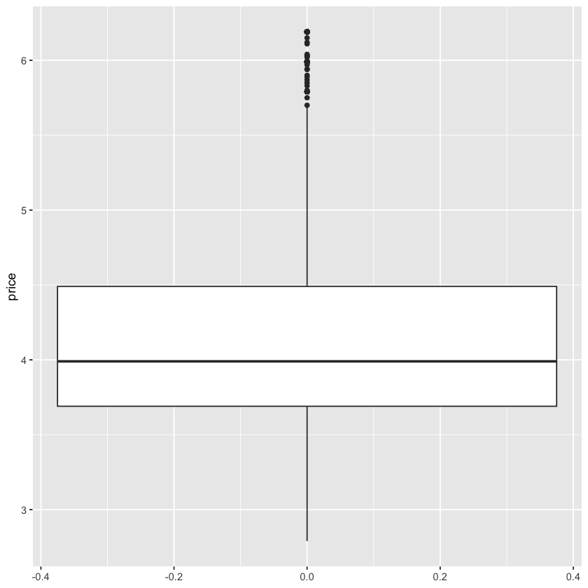
-
在这段代码中：
ggplot(beer)创建了数据层，告诉ggplot2我们要使用beer数据来绘图geom_boxplot(aes(y = price))添加了一个箱形图的几何层，告诉ggplot2我们要绘制价格的箱形图aes函数用来指定映射关系，在这里我们把价格映射到 y 轴上，这样我们就可以看到价格的分布情况了
-
注意，这里我们不用使用
beer$price来指定价格列，因为在ggplot2中，数据已经被传入了，所以我们直接使用列名就可以了
接下来，我们来加入一个维度，分别展示进口和非进口啤酒的价格分布：
ggplot(beer) +
geom_boxplot(aes(y = price, x = imported))
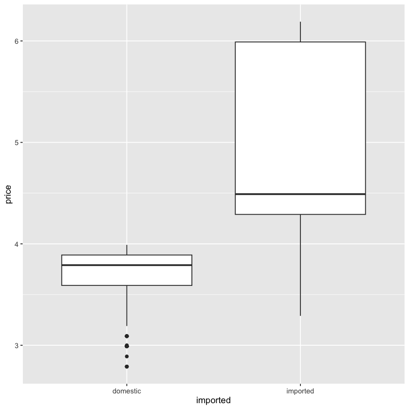
- 这里我们在
aes函数中加入了x = imported，这样我们就可以通过 x 轴来区分进口和非进口啤酒的价格分布了 - 运行这段代码后，我们就可以看到两个箱形图，一个是进口啤酒的价格分布，另一个是非进口啤酒的价格分布了
这里我们可以看出来，aes 函数中：
y参数指定了图像的 y 轴数据怎样延伸，这里我们把价格填入到 y 轴上，这样我们就可以看到价格的分布情况了x参数指定了图像的 x 轴怎样延伸，这里我们是通过imported这个变量来区分进口和非进口啤酒的价格分布的- 通过这种方式，我们就可以非常灵活地控制图像的结构和特征了
- 我们不妨试试把
y和x参数交换一下位置，看看会发生什么：
ggplot(beer) +
geom_boxplot(aes(y = imported, x = price))
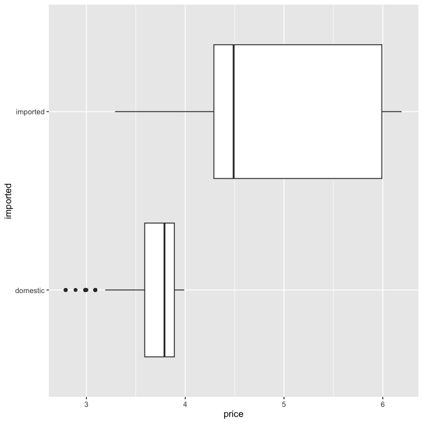
- 可以看到，这个时候就会变成一个横向的箱形图了
- 因此，
aes函数中的x就决定了图像的 x 轴数据怎样延伸，y就决定了图像的 y 轴数据怎样延伸，通过交换它们的位置，我们就可以得到不同方向的箱形图了
我们再来看一个例子，我们展示不同品牌啤酒的价格分布：
ggplot(beer) +
geom_boxplot(aes(y = price, x = brand))
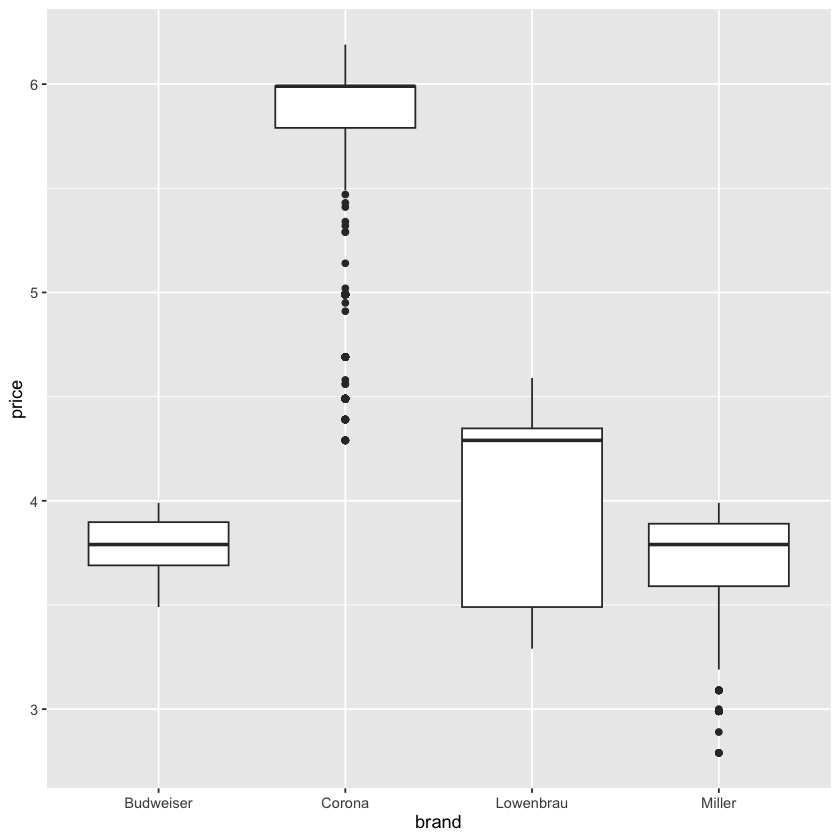
3. 绘制直方图 (Histogram)¶
直方图展示的是数据的分布情况，使用的函数是 geom_histogram：
- 例如，我们想展示每周销量的分布情况，其中可以使用
aes(x = sales)来指定销量列作为 x 轴数据 aes函数基本不需要指定 y 轴数据，因为直方图的 y 轴默认就是频数或者密度了，所以我们只需要指定 x 轴数据就可以了
ggplot(beer) +
geom_histogram(aes(x = qty))
在 geom_histogram 函数中，我们可以使用两种方式来控制直方图的显示效果：
bins参数：这个参数用来指定直方图的箱数，也就是我们把数据分成多少个区间来展示，默认是 30 个箱子-
binwidth参数：这个参数用来指定每个箱子的宽度，也就是我们把数据分成多宽的区间来展示，默认是根据数据的范围和箱数自动计算的 -
我们来对比一下这两种方式的效果：
ggplot(beer) +
geom_histogram(aes(x = qty), bins = 20)
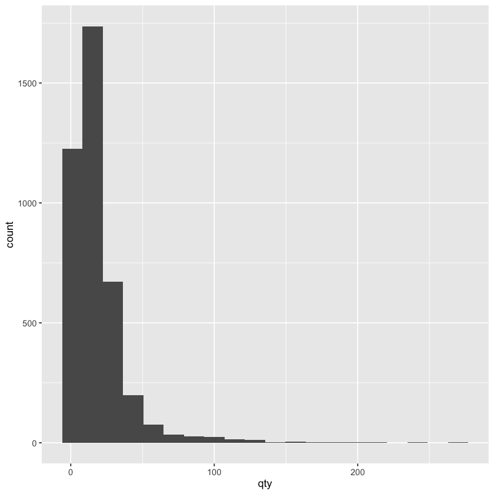
ggplot(beer) +
geom_histogram(aes(x = qty), binwidth = 10)
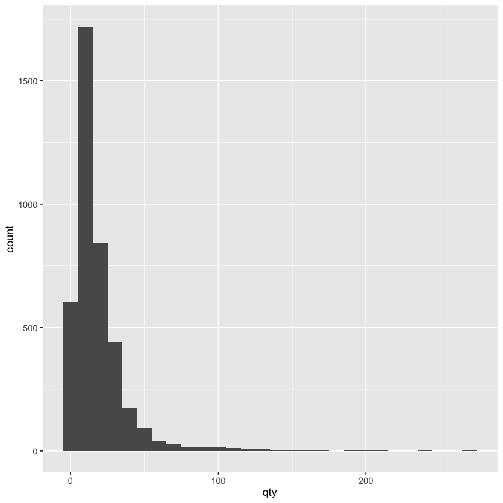
除了指定箱数和箱宽之外，我们还可以通过 fill 参数来指定是否按照某列来将箱体改为堆叠式箱体：
- 例如，我们可以使用
aes(fill = imported)来指定按照进口和非进口啤酒来区分不同颜色的箱体，注意fill参数是aes函数中的一个参数 - 这样我们就可以看到进口和非进口啤酒的销量分布情况了
ggplot(beer) +
geom_histogram(aes(x = qty, fill = imported), binwidth = 10)
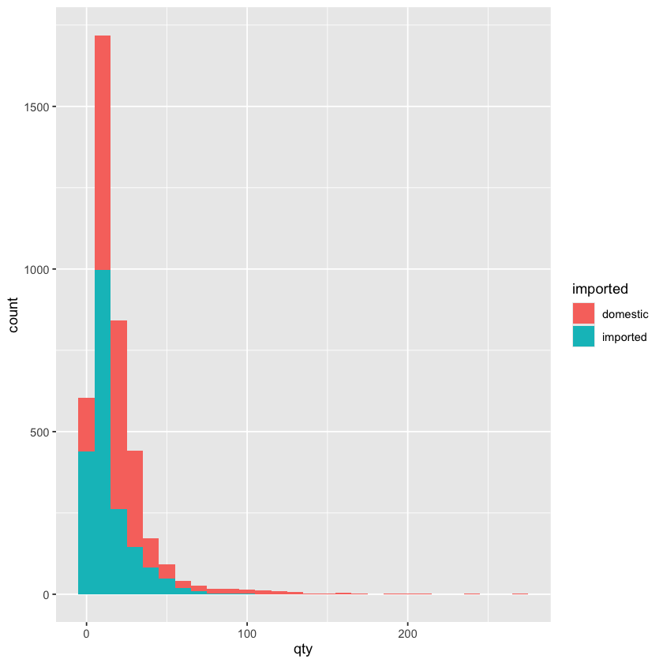
- 这个结果表示的含义是，每个箱体我都分为两部分，一部分是进口啤酒的销量分布，另一部分是非进口啤酒的销量分布
- 比方说第一个箱体的区间是 0-10，那么这个箱体的下半部分的蓝色部分表示非进口啤酒的销量在 0-10 这个区间内的频数，而上半部分的红色部分表示进口啤酒的销量在 0-10 这个区间内的频数
4. 绘制密度图 (Density Plot)¶
密度图可以理解为直方图的变体，它是将直方图有棱角的箱体变成了平滑的曲线，使用的函数是 geom_density：
ggplot(beer) +
geom_density(aes(x = qty))
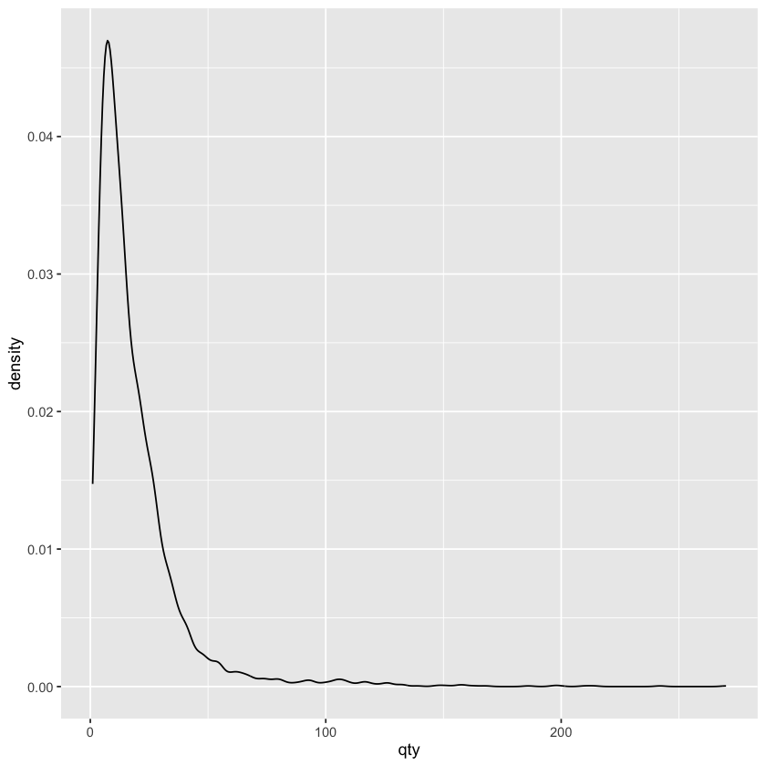
直方图和密度图都是展示数据分布的图形类型，区别在于：
- 直方图可以准确表示出每个区间内的频数或者密度，但是箱体不连续导致对数据分布的整体趋势不够直观
- 密度图则是通过平滑曲线来近似表示数据的分布情况，虽然会丢失一些细节东西，但这样表示更直观一些
当然，密度图也可以通过 aes(fill = imported) 来区分进口和非进口啤酒的密度曲线了，这样我们就可以看到不同类型啤酒的销量分布情况了
ggplot(beer) +
geom_density(aes(x = qty, fill = imported))
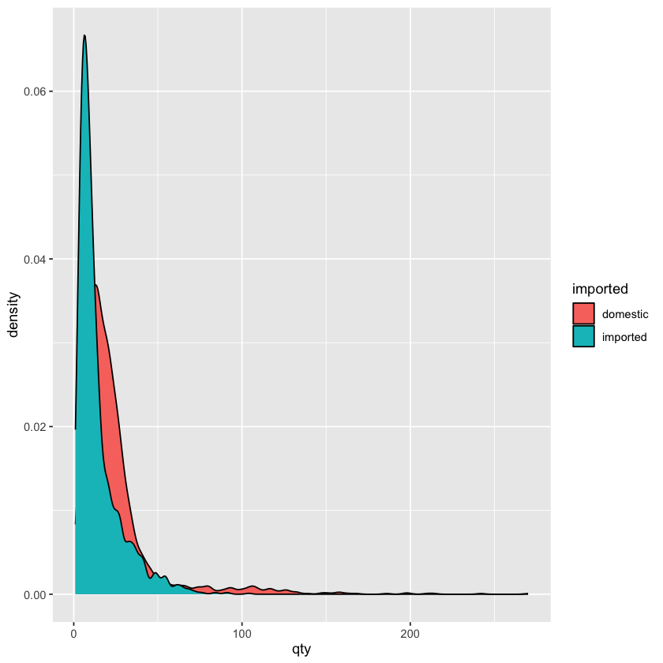
5. 绘制散点图 (Scatter Plot)¶
散点图展示的是两个连续变量之间的关系，使用的函数是 geom_point：
- 在
geom_point函数中，我们可以使用aes(x = X, y = Y)，这时的x和y都必须是数值型的连续变量，这样我们才能在散点图中展示它们之间的关系了 - 除此之外我们还可以使用
color参数来指定按照某列来区分不同颜色的点，例如我们可以使用aes(color = imported)来指定按照进口和非进口啤酒来区分不同颜色的点了 -
这里我们简单区分一下
color和fill这两个参数：color参数用来指定点的边框颜色fill参数用来指定点的填充颜色- 这里我们使用
color而不使用fill是因为散点图中的点是没有填充颜色的，整个点全是边框
ggplot(beer) +
geom_point(aes(y = price, x = qty, color = imported)) +
scale_color_okabe_ito()
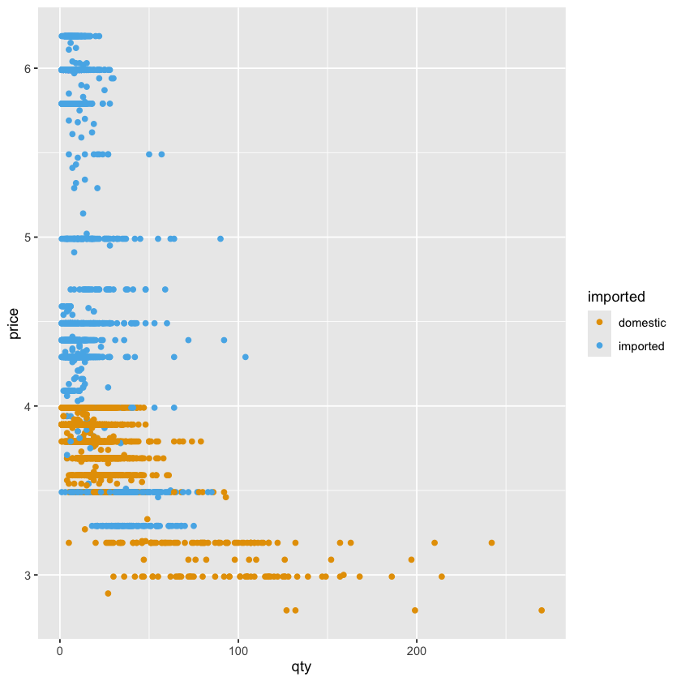
在散点图中，经常与散点一起绘制的还有平滑曲线，我们可以使用 geom_smooth 函数来添加平滑曲线：
- 首先，
geom_smooth中我们要使用aes(x = X, y = Y)来指定 x 轴和 y 轴的数据来源，这个基本上是与geom_point中的aes函数是一样的 -
接着，在
geom_smooth函数中，我们还可以添加以下参数：method参数：这个参数用来指定平滑曲线的拟合方法，常用的有 "lm"（线性模型）、"loess"（局部回归）等，默认是 "loess"se参数：这个参数用来指定是否显示平滑曲线的置信区间，默认是TRUE，表示显示置信区间，如果设置为FALSE，则不显示置信区间color参数：这个参数用来指定平滑曲线的颜色
ggplot(beer) +
geom_point(
aes(y = price, x = qty, color = imported),
alpha = 0.25
) +
geom_smooth(
aes(y = price, x = qty),
method = "lm",
color = palette_okabe_ito()[7],
se = TRUE
) +
geom_smooth(
aes(y = price, x = qty),
method = "loess",
color = palette_okabe_ito()[5],
se = TRUE
)
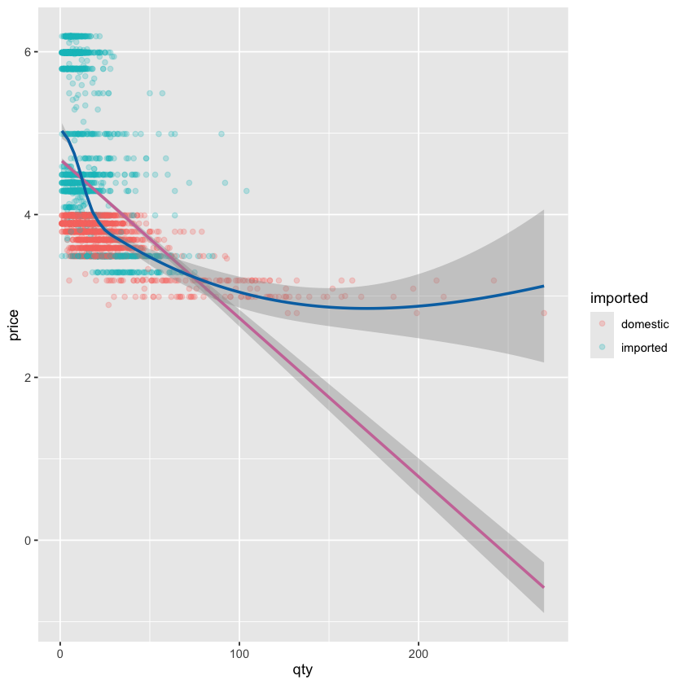
事实上，当我们的多个图层都要使用相同的 aes 映射时，我们可以把这个 aes 映射放在 ggplot 函数中，这样就不需要在每个图层中重复指定了：
ggplot(
beer,
aes(y = price, x = qty, color = imported)
) +
geom_point(alpha = 0.25) +
geom_smooth(
method = "lm",
color = palette_okabe_ito()[7],
se = TRUE
) +
geom_smooth(
method = "loess",
color = palette_okabe_ito()[5],
se = TRUE
)

6. R 中分图¶
(1) 手动分图¶
在 R 中，我们可以将多个图形放在一个画布上展示，代码虽然有些复杂，但是逻辑比较简单：
- 我们只需将每个图像的代码，放入一个括号中，然后使用
|来连接这些括号中的代码块，就可以将这些图像放在同一行展示了 - 如果要换行，我们可以使用
/来换行，然后继续使用|来连接下一行的图像代码块 - 语法结构如下，以下展示了将6个图像分成2行3列的示例：
(图1代码) | (图2代码) | (图3代码) /
(图4代码) | (图5代码) | (图6代码)
事实上，手动分图不一定非要行列对齐，我们用 | 来表示并列，用 / 来表示换行，可以根据需要来调整图像的排列方式，例如第一行一张图，第二行两张图：
(图1代码) /
(图2代码) | (图3代码)
例如我们想将箱形图和散点图放在同一行展示，我们就可以这样写：
(
ggplot(beer) +
geom_point(aes(y = price, x = qty, color = imported)) +
scale_color_okabe_ito()
) |
(
ggplot(beer) +
geom_boxplot(aes(y = price, x = imported, fill = imported)) +
scale_fill_okabe_ito() +
theme(legend.position = "none")
)
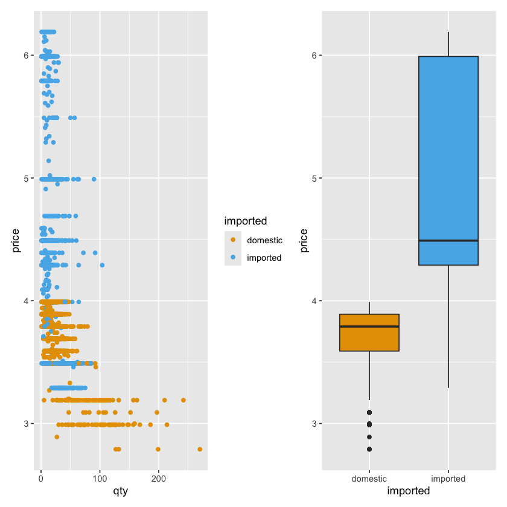
(2) 按要素分图¶
除此之外，我们还可以使用 facet_wrap 函数来按照某个要素来分图：
- 例如我们如果想按照进口和非进口啤酒来分图，我们就可以使用
facet_wrap(~ imported)来指定按照imported这个变量来分图了 - 运行这段代码后，我们就可以看到两个图像了，一个是进口啤酒的价格分布图，另一个是非进口啤酒的价格分布图了
- 通过这种方式，我们就可以非常方便地按照某个要素来分图了，这也是
ggplot2的一个非常重要的功能之一
ggplot(beer) +
geom_point(aes(y = price, x = qty, color = imported)) +
facet_wrap(~ imported)
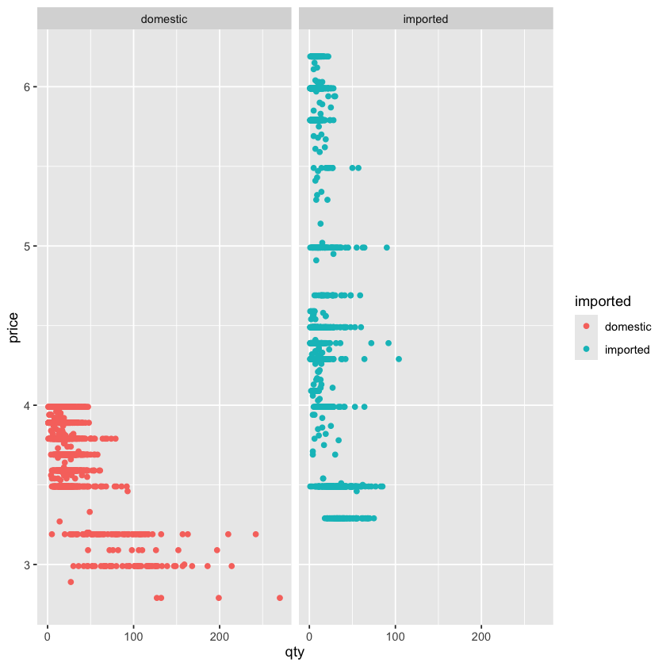